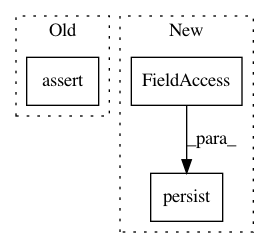

53b261a5a1fad07eaacef60e4861adaf0ec538f0,snips_nlu/tests/test_log_reg_intent_classifier.py,TestLogRegIntentClassifier,test_should_be_serializable,#TestLogRegIntentClassifier#Any#,88
Before Change
"intent_list": intent_list,
"featurizer": mocked_dict
}
self.assertEqual(expected_dict, classifier_dict)
@patch("snips_nlu.intent_classifier.featurizer.Featurizer.from_dict")
def test_should_be_deserializable(self, mock_from_dict):
// Given
After Change
intercept = intent_classifier.classifier.intercept_.tolist()
// When
intent_classifier.persist(self.tmp_file_path)
// Then
intent_list = sorted(SAMPLE_DATASET[INTENTS])
intent_list.append(None)
In pattern: SUPERPATTERN
Frequency: 5
Non-data size: 3
Instances
Project Name: snipsco/snips-nlu
Commit Name: 53b261a5a1fad07eaacef60e4861adaf0ec538f0
Time: 2018-07-09
Author: adrien.ball@snips.net
File Name: snips_nlu/tests/test_log_reg_intent_classifier.py
Class Name: TestLogRegIntentClassifier
Method Name: test_should_be_serializable
Project Name: snipsco/snips-nlu
Commit Name: 53b261a5a1fad07eaacef60e4861adaf0ec538f0
Time: 2018-07-09
Author: adrien.ball@snips.net
File Name: snips_nlu/tests/test_probabilistic_intent_parser.py
Class Name: TestProbabilisticIntentParser
Method Name: test_should_be_serializable_before_fitting
Project Name: snipsco/snips-nlu
Commit Name: 53b261a5a1fad07eaacef60e4861adaf0ec538f0
Time: 2018-07-09
Author: adrien.ball@snips.net
File Name: snips_nlu/tests/test_deterministic_intent_parser.py
Class Name: TestDeterministicIntentParser
Method Name: test_should_be_serializable_before_fitting
Project Name: snipsco/snips-nlu
Commit Name: 53b261a5a1fad07eaacef60e4861adaf0ec538f0
Time: 2018-07-09
Author: adrien.ball@snips.net
File Name: snips_nlu/tests/test_deterministic_intent_parser.py
Class Name: TestDeterministicIntentParser
Method Name: test_should_be_serializable
Project Name: snipsco/snips-nlu
Commit Name: 53b261a5a1fad07eaacef60e4861adaf0ec538f0
Time: 2018-07-09
Author: adrien.ball@snips.net
File Name: snips_nlu/tests/test_probabilistic_intent_parser.py
Class Name: TestProbabilisticIntentParser
Method Name: test_should_be_serializable